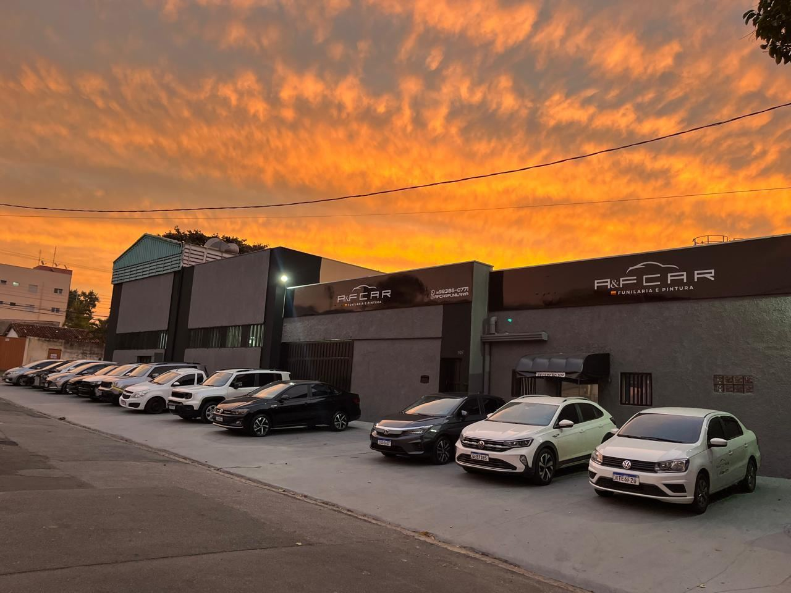
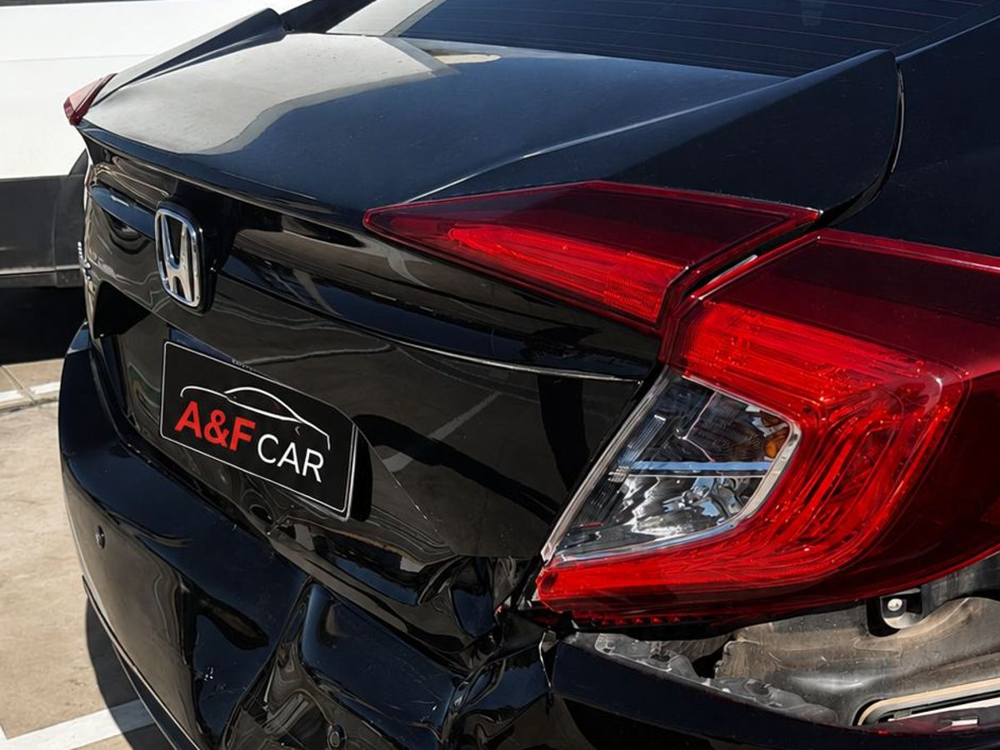
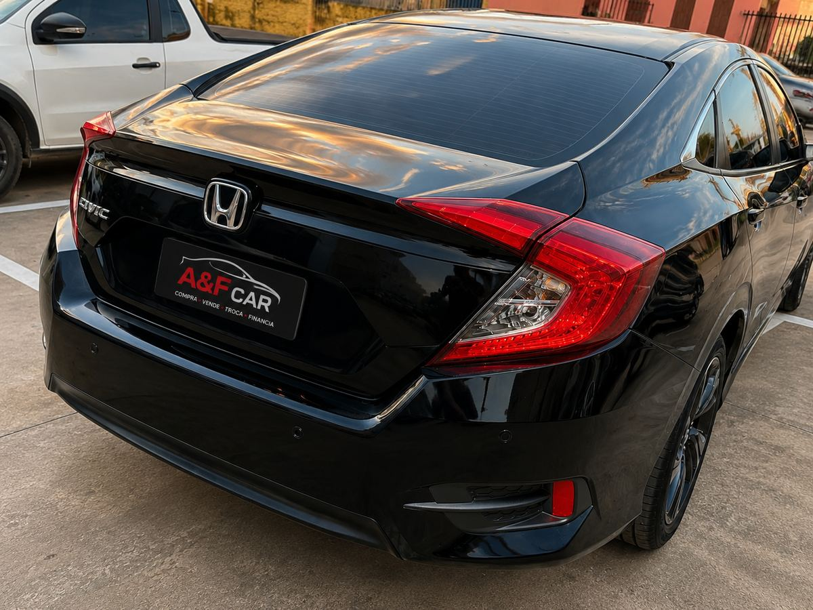
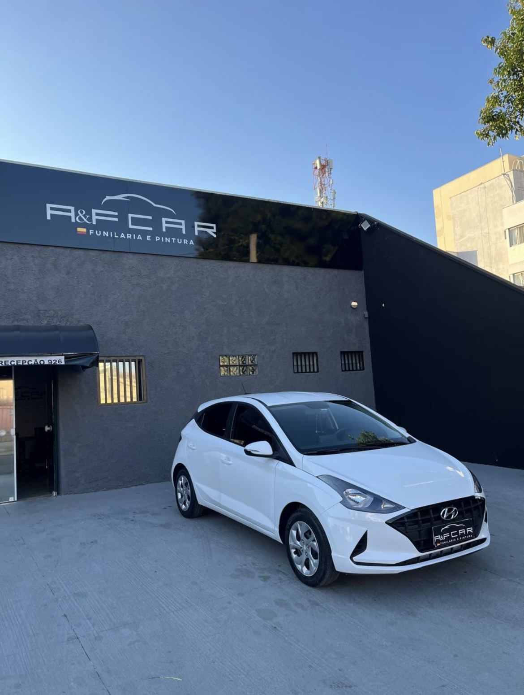
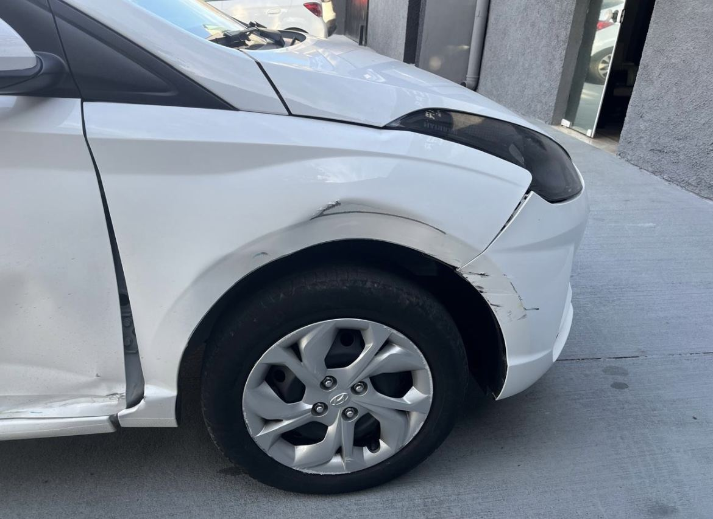
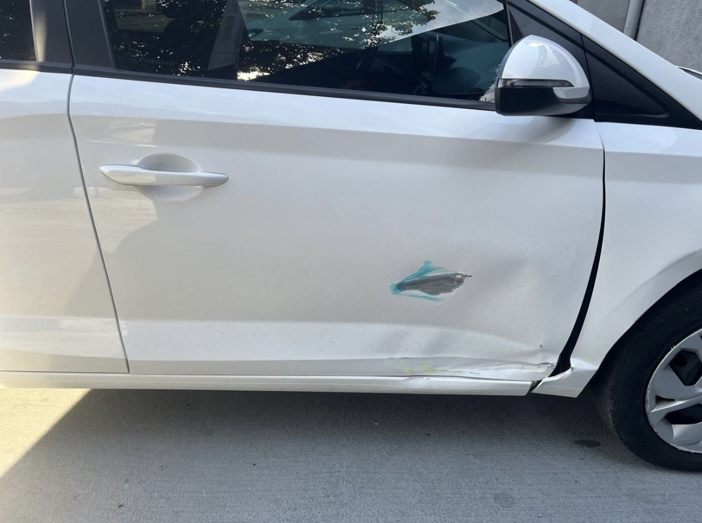
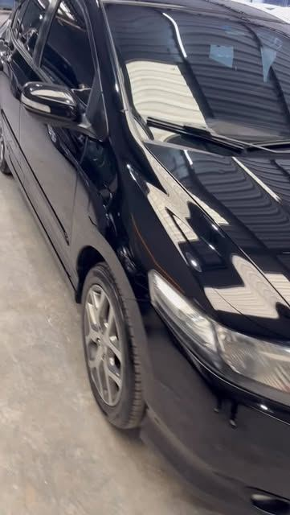
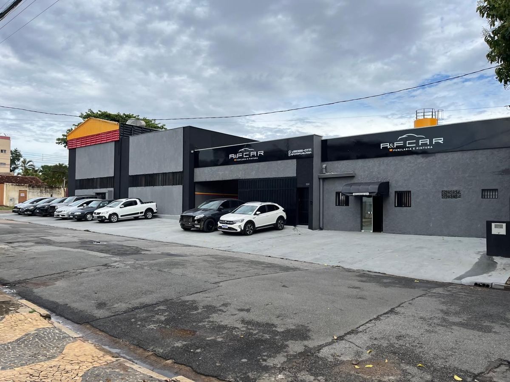

Funilaria
Recuperação de lataria amassada, para-choques e colunas, sem trocar peça quando dá para salvar.

Funilaria, pintura e martelinho de ouro no São Bernardo. Atendemos particular e somos credenciados em seguradoras: você bate, a gente resolve do orçamento à entrega.


AntesDepoisArraste para os lados para comparar.
Recuperação de lataria amassada, para-choques e colunas, sem trocar peça quando dá para salvar.
Pintura parcial ou completa, com acerto de cor para não ficar diferença entre as peças.
Pequenos amassados de granizo, porta de estacionamento e batidinhas, sem repintar.
Brilho de volta e riscos superficiais removidos. Ideal para fechar o serviço.
Sem acionar o seguro, direto com a oficina.
Credenciados em seguradoras. Ajudamos com o passo a passo do sinistro.





Fiquei apavorada após uma colisão, com a certeza de que teria de trocar a porta. O Fernando garantiu que não precisaria, e meu carro ficou novinho de novo.Bianca · Google
Entregaram o carro antes da data que estava prevista. Fiquei muito satisfeita!Juliana · Google
O lugar transmite muita confiança e profissionalismo, com atendimento atencioso e transparente do começo à entrega.Catia · Google
| Segunda a sexta | 8h às 11h45 · 13h às 18h |
| Sábado e domingo | Fechado |